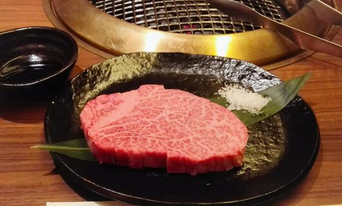
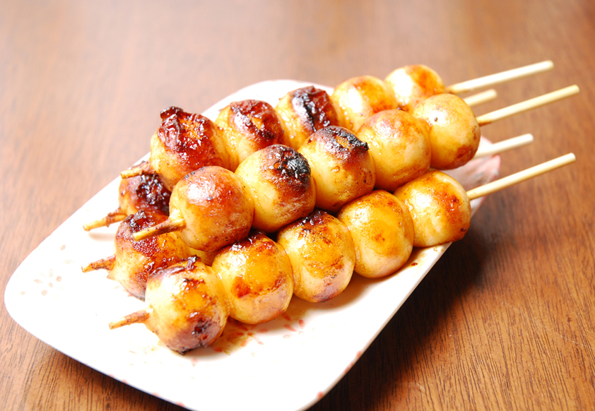
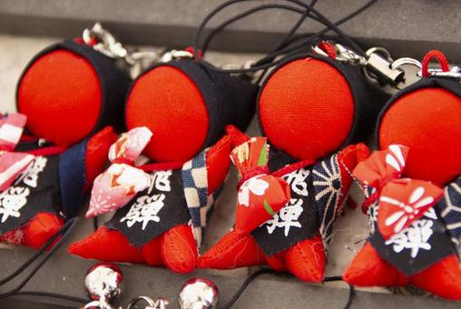

飛騨牛
高山市の名物といえばやっぱり飛騨牛！地元のレストランで贅沢な味わいを体験できます。
みたらしだんご
甘くない、しょうゆ味の「みたらしだんご」は高山の定番おやつ。朝市などでも購入可能！
さるぼぼのグッズ
飛騨地方の伝統人形「さるぼぼ」はお守りとしても人気。雑貨店でたくさんの種類が見られます。
高山市の名物といえばやっぱり飛騨牛！地元のレストランで贅沢な味わいを体験できます。
甘くない、しょうゆ味の「みたらしだんご」は高山の定番おやつ。朝市などでも購入可能！
飛騨地方の伝統人形「さるぼぼ」はお守りとしても人気。雑貨店でたくさんの種類が見られます。